1. Logo oficial — la fuente
El favicon y app icon de MilkBook se derivan del logo oficial: botella azul con leche cremosa + cabeza de vaca azul con cuernos y manchas verdes + wordmark "MilkBook" en azul y verde. Se usa la misma paleta de marca para mantener coherencia visual.
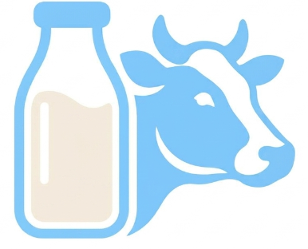
El wordmark "MilkBook" solo aparece en: logo completo, PWA splash, marketing impreso y onboarding. El isotipo solo (botella + cabeza de vaca) es el que se usa en favicon y app icon porque la palabra es ilegible a 16 px y compite con el isotipo en tamaños grandes.
2. Favicon web (16-512 px)
El favicon es el icon que se ve en la pestaña del navegador, marcador, history, PWA install. Sobrevive muchos tamaños y fondos. Generado directamente desde el isotipo con Pillow.
Tamaños reales generados (assets/)
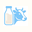
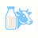
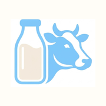
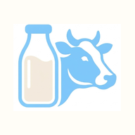
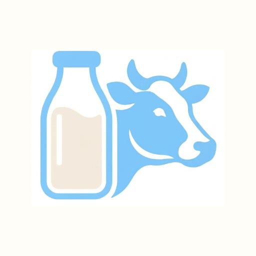
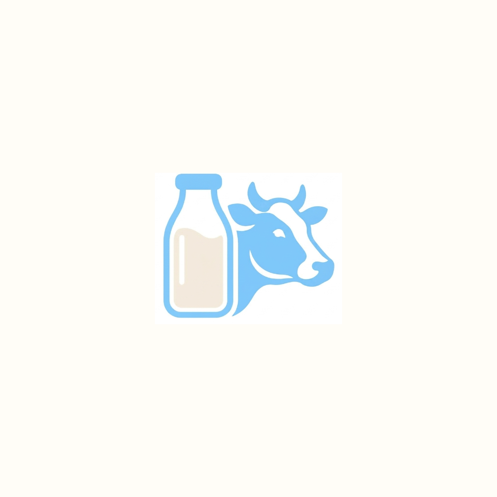
Cómo se ve en contextos reales
Test de reconocimiento: MilkBook vs otras apps
Test crítico: ¿se reconoce MilkBook en una grid de apps mezcladas, en el celular de Carlos (Xiaomi con MIUI)? El isotipo botella+vaca es único en el ecosistema android.
Cajón de apps · Mi launcher
Observación: el isotipo MilkBook (botella azul cremosa + vaca azul con verde) contrasta bien con apps de iconos sólidos coloreados. El doble azul claro del isotipo (botella + cabeza de vaca) es distintivo — no hay otra app de gestión rural con esa combinación específica.
3. App icon iOS (apple-touch-icon)
Apple aplica máscara automática (squircle) al PNG. NO incluir esquinas redondeadas en el asset. Fondo siempre #FFFDF7 (cream-50).
| Asset | Tamaño | Uso |
|---|---|---|
apple-touch-icon.png | 180 × 180 | iPhone home, PWA install iOS |
AppIcon-1024.png | 1024 × 1024 | App Store marketing |
4. App icon Android (adaptive + legacy)
Android 8+ separa el icon en background (color) + foreground (isotipo centrado en safe zone). MilkBook provee icon-512-maskable.png con safe zone del 55% del lado (lo que garantiza visibilidad en todos los launchers).
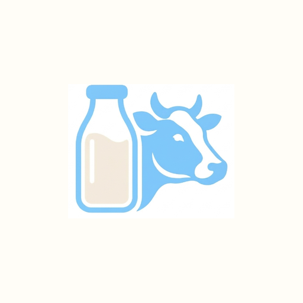
Comparación: launcher Pixel vs MIUI vs Samsung
Background: #FFFDF7 (cream-50). Foreground: isotipo centrado en safe zone (55%). El icon respeta el safe zone para verse bien en TODOS los launchers (Pixel, MIUI, One UI, EMUI).
5. PWA splash screen (con wordmark)
Cuando un usuario "instala" la PWA en iOS/Android, ve un splash mientras la app carga. Aquí sí incluimos el wordmark "MilkBook" (es un momento branding de alto impacto).
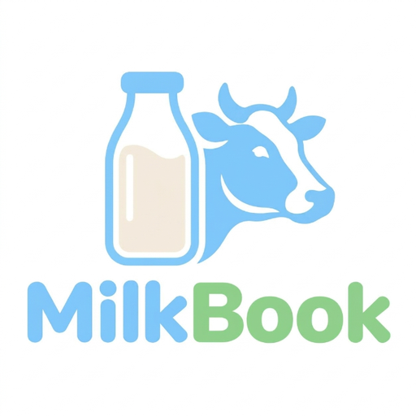
Nota: el splash usa pwa-splash-512.png, que es el logo completo (isotipo + wordmark "MilkBook"). Solo en este momento aparece el wordmark completo dentro de la experiencia app.
6. Variante dark vs light
Decisión MilkBook: el app icon NO cambia entre light y dark. Siempre fondo crema #FFFDF7.
Default en TODOS los contextos
El icon se ve igual sobre fondo oscuro del launcher
Por qué no invertir: el fondo crema evoca la leche, la identidad láctea. Si fuera negro, se vería como cualquier app genérica. Cuando Carlos abre su cajón de apps y ve MilkBook, debe reconocer "ahí está la app de mi leche", no "ahí está otra app oscura más".
7. Microsoft tile (Windows)
Microsoft tile icon para cuando MilkBook se "ancla" al menú inicio de Windows. Se proveen variantes cuadradas y wide.
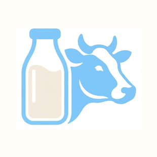
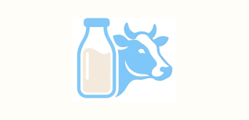
8. Inventario completo de assets
Todos los archivos PNG generados a partir del logo oficial. Carpeta assets/:
| Archivo | Tamaño | Uso |
|---|---|---|
milkbook-logo-source.png | 637 × 637 | Fuente · logo oficial completo |
isotype-source.png | 386 × 312 | Fuente · isotipo sin wordmark |
favicon-16.png | 16 × 16 | Pestaña del navegador legacy |
favicon-32.png | 32 × 32 | Pestaña del navegador moderno |
favicon-48.png | 48 × 48 | Windows tile pequeño |
apple-touch-icon.png | 180 × 180 | iOS home screen, PWA iOS |
icon-192.png | 192 × 192 | Android Chrome, PWA |
icon-512.png | 512 × 512 | PWA splash, Android store |
icon-512-maskable.png | 512 × 512 | Android adaptive (safe zone 55%) |
AppIcon-1024.png | 1024 × 1024 | App Store marketing |
pwa-splash-512.png | 512 × 512 | PWA splash con wordmark |
mstile-70x70.png | 70 × 70 | Microsoft tile pequeño |
mstile-150x150.png | 150 × 150 | Microsoft tile medio |
mstile-310x310.png | 310 × 310 | Microsoft tile grande |
mstile-310x150.png | 310 × 150 | Microsoft tile ancho |
ic_notification_24.png | 24 × 24 | Android push notification (silueta blanca) |
9. Reglas duras
✅ Lo que SIEMPRE
- Usar el isotipo del logo oficial como fuente —
../1-logo/logo_milkbook.png - Fondo siempre
#FFFDF7(cream-50) en todos los iconos - Usar el isotipo del logo oficial (no el wordmark) para favicon y app icon
- Padding interno del 10% — el isotipo nunca toca el borde
- Maskable icon con safe zone del 55% del lado (Android 8+)
- PNG sin transparencias para iOS
- Wordmark SOLO en PWA splash, NUNCA en el app icon
- Notificación Android 24dp blanco sobre transparente
❌ Lo que NUNCA
- NUNCA usar el logo oficial (
logo_milkbook.png) — está descartado - NUNCA el logo completo (con wordmark) en el app icon — no se lee a 16 px
- NUNCA fondo negro en el app icon — rompe la identidad láctea
- NUNCA el isotipo tocando el borde del icono (sin padding)
- NUNCA cambiar el icon entre light y dark — siempre crema
- NUNCA ícono cuadrado perfecto en iOS — Apple aplica máscara
📋 Resumen: decisión final
Fuente: logo oficial (logo_milkbook.png) · isotipo recortado · 15 tamaños generados automáticamente.
Fondo: #FFFDF7 (cream-50) · siempre, en light y dark.
Isotipo: centrado, ocupa 80% del lado (padding 10%).
Wordmark: solo en PWA splash, nunca en icon.
Notificación: silueta blanca sobre transparente (24 dp).
Variante dark: no se usa en ningún contexto.